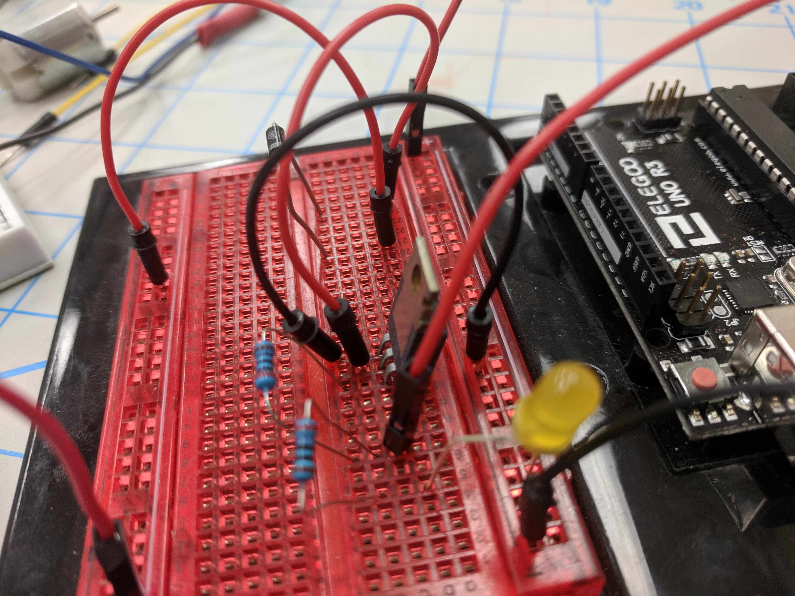

A Journey Through My Use of Protoboards and an nScope
Protoboards
I have spent a great portion of my life with protoboards. But alas, I must start somewhere. Thus, this story starts in February of 2019 as I was in a group tasked with the challenge of creating a voiced activated hospital bed remote. To the left you may see my initial drawing of the circuit. The device would use a raspberry pi which runs on 3.3V logic but the solenoids we were using to press the hospital bed remote buttons were running on 12 volts.
We thus came up with the idea of using MOSFET transistors to step up from this 3.3 vold logic to the 12 volts needed to activate the solenoids. Everyone in the team was incredibly new to protoboarding and MOSFETs so we expected this circuit to work perfectly without a hitch. Looking back, that was incredibly laughable.
We had to modify the ciruit to step up from a 3.3 volt logic to a 5 volt logic to activate a switch which would complete the 12 volt circuits.
The nScope
Cep risus aliquam gravida cep ut lacus amet. Adipiscing faucibus nunc placerat. Tempus adipiscing turpis non blandit accumsan eget lacinia nunc integer interdum amet aliquam ut orci non col ut ut praesent. Semper amet interdum mi. Phasellus enim laoreet ac ac commodo faucibus faucibus. Curae ante vestibulum ante. Blandit. Ante accumsan nisi eu placerat gravida placerat adipiscing in risus fusce vitae ac mi accumsan nunc in accumsan tempor blandit aliquet aliquet lobortis. Ultricies blandit lobortis praesent turpis. Adipiscing accumsan adipiscing adipiscing ac lacinia cep. Orci blandit a iaculis adipiscing ac. Vivamus ornare laoreet odio vis praesent nunc lorem mi. Erat. Tempus sem faucibus ac id. Vis in blandit. Nascetur ultricies blandit ac. Arcu aliquam. Accumsan mi eget adipiscing nulla. Non vestibulum ac interdum condimentum semper commodo massa arcu.